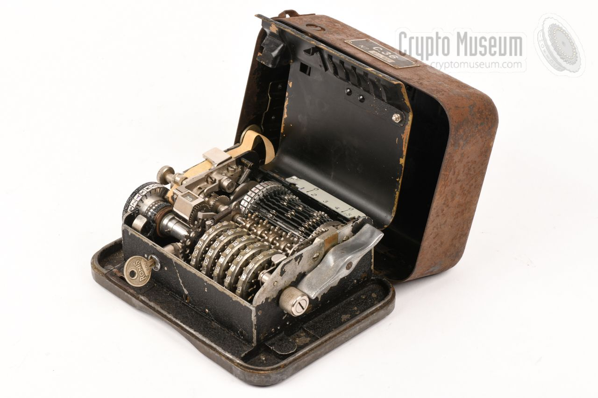

Mașina Enigma
Intrarea în secolul XX a adus cu sine nu doar dezvoltări științifice și tehnologice fără precedent, ci și o nevoie tot mai acută de securizare a comunicațiilor militare și diplomatice. În acest context, criptografia a trecut de la metodele manuale și dispozitivele simple, precum discul lui Jefferson, la sisteme electromecanice complexe capabile să genereze milioane de combinații posibile. Dintre acestea, Mașina Enigma rămâne cel mai emblematic exemplu al criptografiei moderne timpurii, simbolizând atât ingeniozitatea umană, cât și începutul erei criptanalizei computerizate.
Originea și principiul de funcționare
Mașina Enigma a fost inventată în 1918 de inginerul german Arthur Scherbius, care a brevetat un dispozitiv electromecanic destinat inițial uzului comercial. Curând, însă, invenția a fost adoptată și perfecționată de Forțele Armate Germane, devenind instrumentul principal de criptare a comunicațiilor militare în perioada celui de-al Doilea Război Mondial.
Principiul său de funcționare se baza pe sistemul rotorilor electrici, care efectuau substituții multiple și variabile ale literelor. Mașina era alcătuită dintr-o tastatură, un set de 3 până la 5 rotori numerotați, un reflector și un panou de conexiuni (plugboard). Fiecare rotor conținea un cablaj intern care efectua o substituție a celor 26 de litere ale alfabetului. La fiecare apăsare de tastă, curentul electric trecea printr-un lanț de conexiuni determinat de poziția rotorilor, iar rezultatul era o literă aprinsă pe un panou luminos.
Se estimează că Enigma militară germană putea produce peste 10^114 configurații diferite, ceea ce, teoretic, o făcea imposibil de spart prin metode brute. În realitate, vulnerabilitățile nu proveneau din principiul tehnic, ci din erorile umane și din repetitivitatea operațională a operatorilor germani.
Spargerea codului Enigma
În ciuda complexității sale, Enigma a fost în cele din urmă decriptată datorită efortului combinat al matematicienilor polonezi și britanici. Primii pași în această direcție au fost făcuți în 1932 de Marian Rejewski, Jerzy Różycki și Henryk Zygalski, criptografi ai Biroului Cifrelor din Polonia. Folosind metode matematice bazate pe teoria permutărilor și pe analiza mesajelor interceptate, aceștia au reușit să reconstruiască mecanismul intern al mașinii și să creeze o replică funcțională. Ulterior, în timpul războiului, cercetările lor au fost transmise Marii Britanii, unde echipa condusă de Alan Turing la Bletchley Park a dezvoltat o mașină specială de criptanaliză numită Bombe. Aceasta simula funcționarea mai multor Enigma în paralel, testând automat diverse configurații de rotori. Prin combinarea acestor eforturi, Aliații au reușit să descifreze zilnic o mare parte din comunicațiile militare germane, obținând un avantaj strategic decisiv în război

Hagelin C-35/C-36
După succesul și complexitatea mașinii Enigma, criptografia mecanică a continuat să evolueze în direcția miniaturizării și a creșterii eficienței. Unul dintre cele mai semnificative rezultate ale acestei evoluții a fost apariția mașinilor Hagelin, concepute de inginerul suedez Boris Hagelin în anii 1930. Dispozitivele din seria C-35 și C-36 au reprezentat o inovație crucială în domeniul criptografiei portabile, fiind folosite intens de armatele și serviciile de informații ale mai multor state până la mijlocul secolului XX.
Boris Hagelin (1892–1983) a fost un inventator cu o viziune pragmatică: crearea unei mașini de criptare care să combine securitatea cu ușurința de transport și utilizare. În contrast cu Enigma, voluminoasă și costisitoare, Hagelin a conceput un dispozitiv compact, fiabil și ușor de operat chiar și pe front. Primul model important, C-35, a fost finalizat în 1935 și produs inițial pentru armata suedeză. Ulterior, a apărut C-36, o versiune îmbunătățită cu un sistem de permutare mai sofisticat. Principiul de funcționare al acestor mașini se baza pe roți de codare (pinwheels) și bare mobile (lugs), care determinau deplasarea și substituția literelor. Acest sistem oferea un nivel ridicat de variabilitate și complexitate, menținând totodată o construcție mecanică robustă.
Principiul de funcționare
În esență, mașinile Hagelin utilizau un set de cinci până la șase roți numerotate, fiecare având un număr diferit de pini activi și inactivi. Configurația acestor pini reprezenta cheia de criptare. La fiecare tastare, combinația de pini activi determina o deplasare variabilă a unui tambur de alfabet.
Procesul poate fi rezumat astfel:
- Operatorul introduce o literă pe tastatură.
- Poziția curentă a roților stabilește deplasarea aplicată asupra alfabetului.
- Mașina produce o literă criptată, care apare pe banda de hârtie.
- Roțile avansează automat, modificând deplasarea pentru următorul caracter.
Prin acest mecanism, fiecare literă a textului clar era transformată în mod diferit, generând un cifru polialfabetic cu deplasare variabilă, mult mai greu de analizat decât sistemele statice anterioare. Cheia putea fi schimbată frecvent, iar posibilitățile de configurare erau considerabil mai numeroase decât în cazul metodelor clasice.
